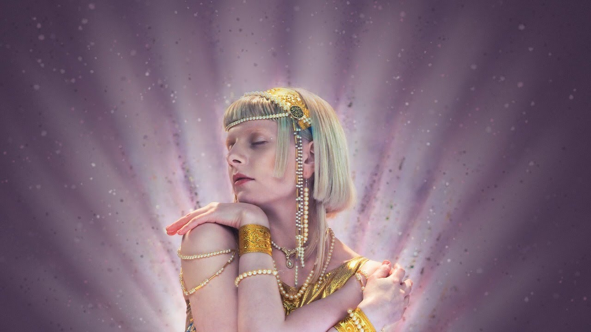
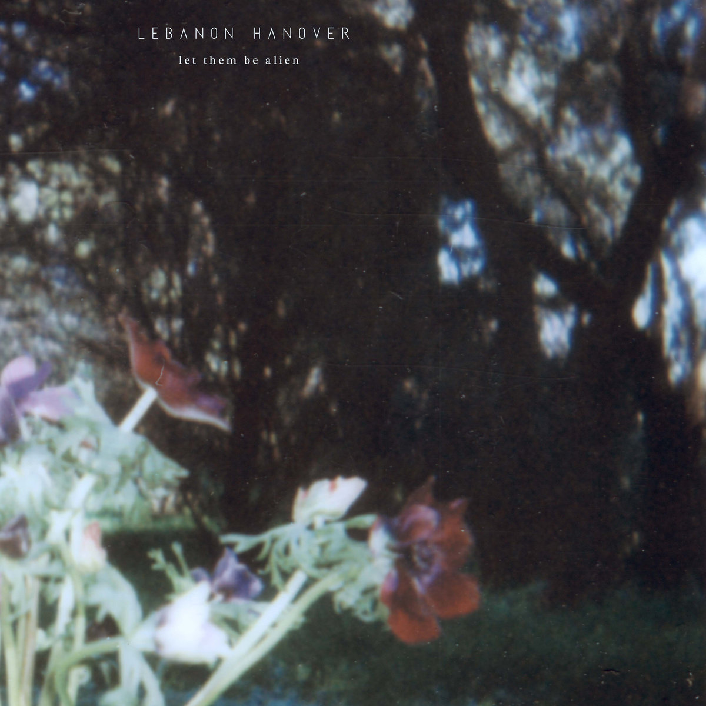

music

Lately I have been listening a lot to shoegaze music and dream pop. I mean, they are like cousins when speaking of music genres. Anyway, I've been trying not to feel too miserable, because this music feels sadder than what I ordinarily listen to, but I really like those vibes.
I’ve been totally glued to one specific song called “Starting Over” by LSD and the Search for God. I’ve been listening to that single song on repeat without getting tired at all. I think what draws me in the most is the beginning; if I try to imagine what LSD could sound like, I think it might be something like that.
I’ve never tried LSD or any psychedelic, really, but if someday I did, I would probably like to listen to that song. It’s just great all around, and that particular sound at the beginning is so good. I feel like I’m on a trip, literally searching for the most hidden and greatest thing in the world or the universe but feeling free and happy.

Today I have been listening again to Aeroplane by RHCP. Every time I listen to this song, I remember things that happened to me between 2023 and 2024, and for some reason I keep feeling drawn to the same things that, in so many ways, have hurt me.
I guess music, for me, has often meant nostalgia—even for things that I know were not good, or that I have idealized for strange reasons. I think I want to get out of that cycle, because I think that being mesmerized by those things is not very healthy for me and could be hurting my present.
It sometimes feels like those things have kept me from being myself. I feel like I'm not really the person some people think I am, but I also feel like my actions have sometimes made it seem that way.
In many situations, I don't think I made the best choices. Even if I felt overwhelmed, those were still my decisions.
I do think that rage or sadness can take you out of your senses, out of who you think you are. That’s why it becomes so easy for people to hurt each other in those states—but that doesn’t change the fact that the harm is real.

Exist for love has been with me through a lot of different moments, and I’ve come to cherish it as one of those songs that can make me cry. There’s something in the way Aurora sings “I cannot heal the hurt, but I will hold you here forever” that kind of makes me feel held by her words. They evoke a sort of joy in me that feels almost childlike—simple, safe. When I listen to it, it feels like nothing can really hurt me, like I’m somehow protected.
There’s something quietly sincere about the idea that not everything can be fixed, that some wounds remain. It feels like the song doesn’t try to resolve pain or give it meaning, and I think that's what makes it feel so gentle and disarming. It’s not about escaping pain or avoiding hurt, but about being accompanied through it. In that sense, the comfort the song provides feels real to me, not idealized.

Gravity sucks a song that for me describes the greatest abandonment and despair, is a song that really picks on my emotional wounds that I remember as my all time lows, the very meaning of the lyrics for me hits hard when in the song is mentioned that you just want to be thrown far away into space, that you no longer want to exist, that you just want to disappear, decompose alone.
My main playlist (not sure if updated at the moment): оскорбляющий